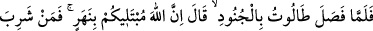
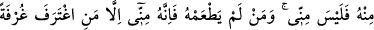
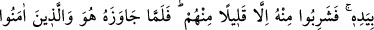
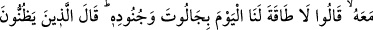
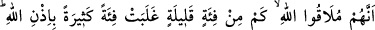
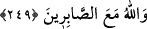

Efendimiz bir hadis-i kudsîde Cenâb-ı Hakk’ın şöyle buyurduğunu bildirmiştir: “Arzım
ve semâm (yer ve gök) beni ihâta edemez, ancak mü’min kulumun kalbi beni ihâta
edebilir.”[208] Allah, insan rûhu mesâbesindeki Tâlût’a, rabbânî kalb tâbûtunu müyesser
kılıp hilafet hükümranlığını, saltanat makamını teslim edince artık o da, aldatıcı
dünyaya meyletmez, aksine onu terkeder ve nefs-i emmâre Câlût’u ile savaşa tutuşur. Bu
da, Cenâb-ı Allah’ın lutfu olmadan; tarikata bağlanıp, hakikate yapışmadan müyesser
olmaz.
Cenâb-ı Hakk’a giden yol budur, yüzünü bu yoldan çevirme!
Vuslata ermek istersen ayağını bu yoldan ayırma!
Kim sekînet isterse mârifete ulaşsın. Zira mârifet-i ilâhiyye kalbte sekînet sağlar.
Bâyezîd’e mârifetten sual edildi, cevaben dedi ki: “Şüphesiz ki hükümdarlar bir
memlekete girdikleri zaman orasını perişan ederler. Halkından şerefli olanları hor
ve hakir kılarlar.” (en-Neml, 27/34). Yâni o memleketin daha önceki halini
değiştirirler. İşte ilâhî ilhamlar birçok şeylerle dolu kalbe girince, oradaki bütün kötü
sıfatları çıkarır atar.” dedi. Bâyezîd’e: “Bu mârifeti nasıl buldun?” denilince cevâben:
“Aç karın, çıplak bedenle” dedi.
Sa’dî demiştir ki:
Eğer gerçek adamsan yemeğini ölçülü ye.
Mideni küp gibi doldurma, insan gibi ol.
Bedenlerini besleyenler uyanık olamaz.
Zira dolu mideliler, hikmet ve fazîletten yana boş olur.
Allah’ım, sana vuslat yolunda bütün manileri önümüzden kaldır! Amin, amin.
249. Tâlût askerlerle beraber (cihad için) ayrılınca: Biliniz ki Allah sizi bir
ırmakla imtihan edecek. Kim ondan içerse benden değildir. Eliyle bir avuç içen
müstesna kim ondan içmezse bendendir, dedi. İçlerinden pek azı müstesna hepsi